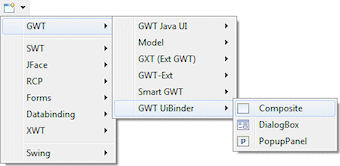
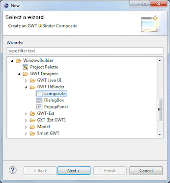
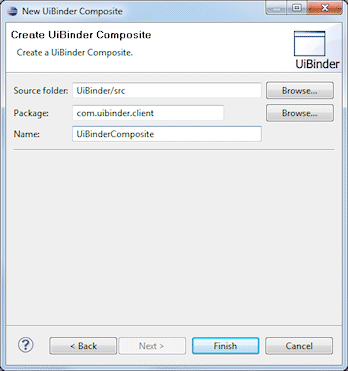

|
Subclasses of the GWT Composite class can be created using the
GWT UiBinder Composite wizard. The wizard can be
selected from the drop down wizard menu or from the
Eclipse New wizard.
To use the wizard, select the project source folder and package to contain the class. Then enter the class name and hit the Finish button. The com.google.gwt.user.client.ui.Composite class is the default superclass. |
  |
|
import The wizard generates the following XML code.
When editing GWT Composites, all of the standard GWT panels, widgets and menus are available. Custom or third party controls may be added via the Choose Component command. GWT Composites hold one and only one top-level child. If you wish to include multiple children, drop one of the GWT panel types first. Note that code that is inappropriate for design time may be hidden with isDesignTime() checks. |